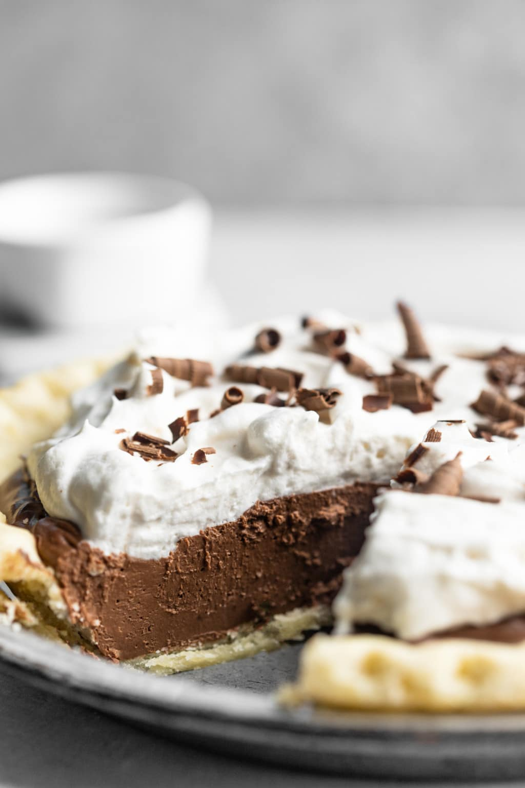

Vegan Chocolate Icebox Pie

Description
This vegan chocolate pie is both simple and delicious!
Ingredients
For the pie filling:
- 12 oz soft or firm silken tofu
- 1 1/2 cup dairy-free chocolate chips
- 2 tbsp non-dairy milk (almond preferred)
- 1/2 cup granulated sugar
For the crust and topping:
- Vegan pie crust - store-bought or homemade (see Nora Cooks for an Easy Vegan Pie Crust recipe)
- Vegan whipped cream
- Non-dairy chocolate shavings
Steps
- Prepare pie crust, or use store-bought crust.
- Melt chocolate chips in microwave in 30-second intervals, stirring in-between, until melted (about 1 1/2 minutes). Let cool for a couple minutes.
- Add melted chocolate chips, silken tofu, milk and sugar to blender. Blend until very smooth.
- Pour the filling on top of the crust and place in refrigerator to chill for at least 2 hours. The pie will firm up as it cools.
- Once pie has chilled, top with whipped cream and chocolate shavings or simply serve each with a dollop of whip.